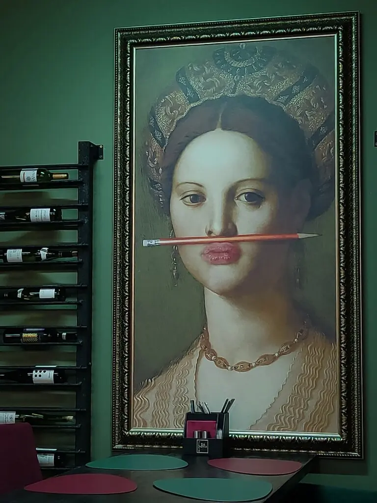
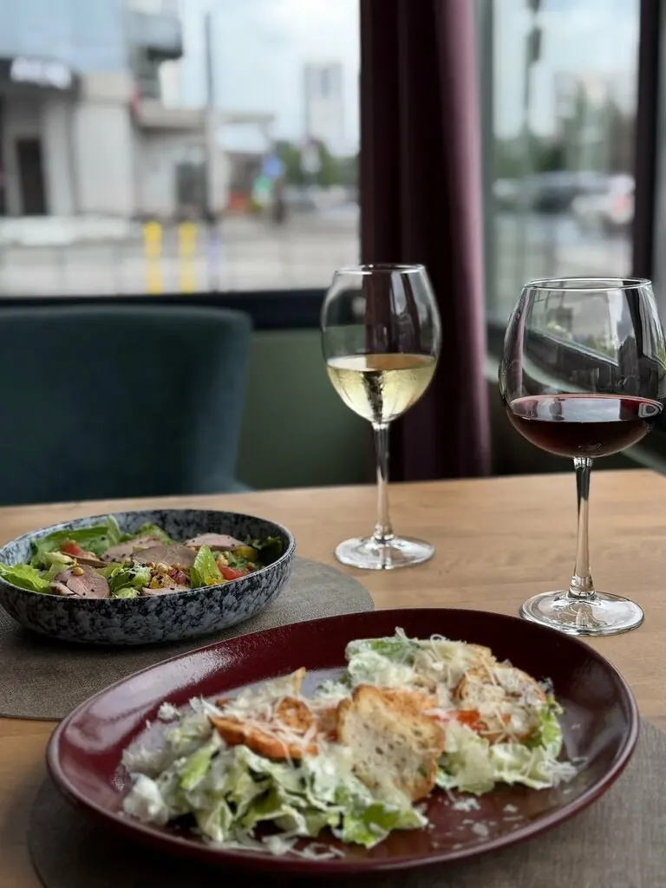
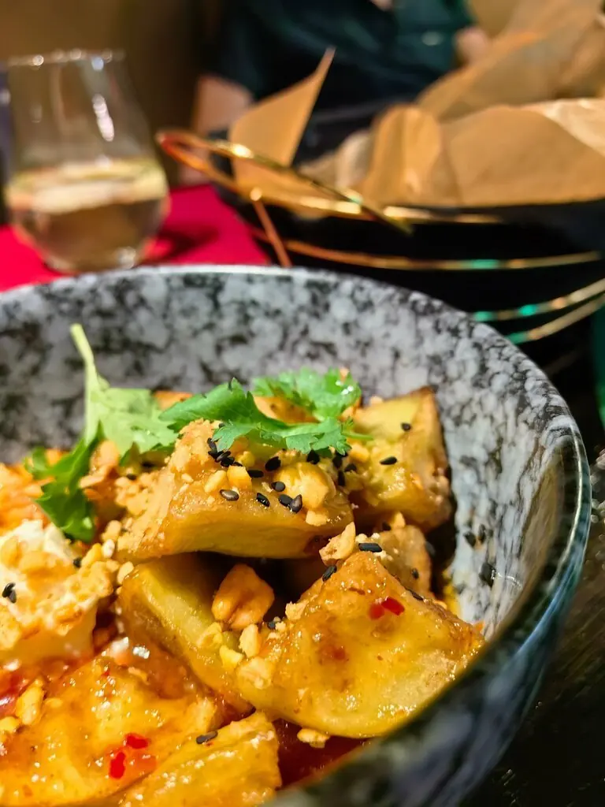
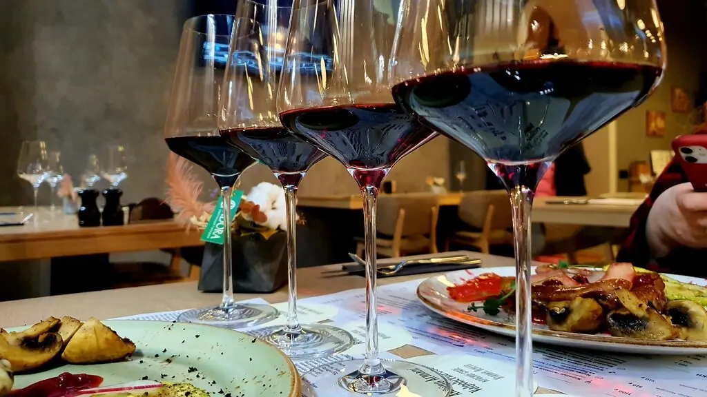
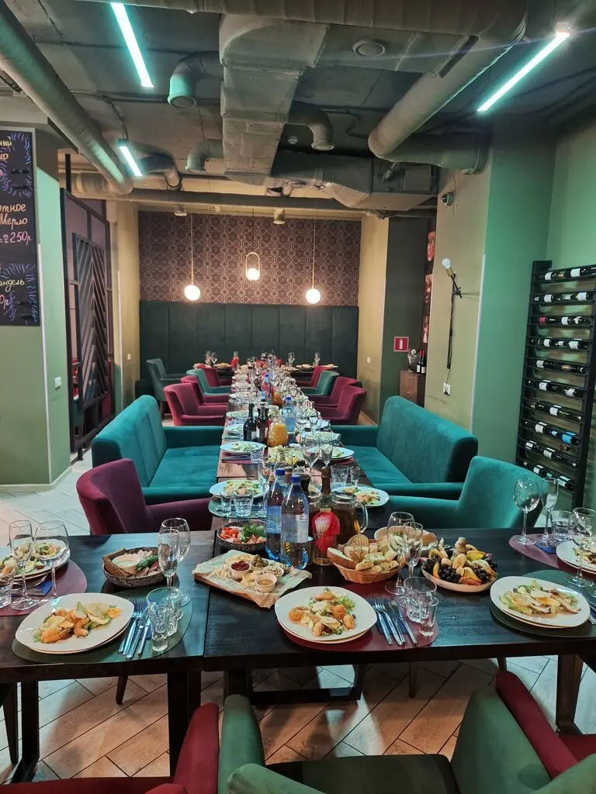

ЗаМерло
Итальянская и европейская кухня, хорошее вино, и официант подскажет, что к чему подходит.
4,7 · 495 оценок на картах

Что к бокалу
Запечённый камамбер в круассанек белому или игристому790 ₽
Пицца с грушей и голубым сыромк десертному840 ₽
Маринованный ростбифк красному960 ₽
Креветки в кокосовом унагик сухому белому750 ₽
Баклажаны с творожным сыромк розовому480 ₽
Цезарь с креветкамик лёгкому белому790 ₽
Блюда и цены частично с Яндекс Карт. Сочетания с вином для примера, официант подскажет лучше.




60 мест, бирюзовый бархат
Стильно и уютно, а пока вы изучаете меню, сразу принесут воду со льдом. По пятницам и субботам до двух ночи.
Отзывы
Отдельное спасибо Егору: и рассказал про блюда, и посоветовал к ним вино.Екатерина Мещерякова
Оформление очень стильное и уютное, сразу понимаешь, что попал в хорошее место.Юлия Сирота
Очень нравится этот ресторан, блюда очень вкусные всегда.Анастасия
До дна
Новокузнецк, проспект Николая Ермакова, 1аПн–чт 12:00–00:00, пт–сб 12:00–02:00, вс 14:00–00:00+7 960 919-10-10